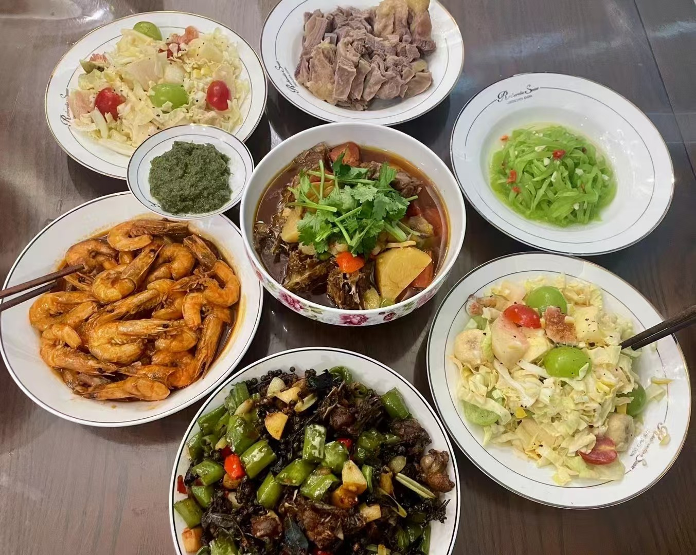
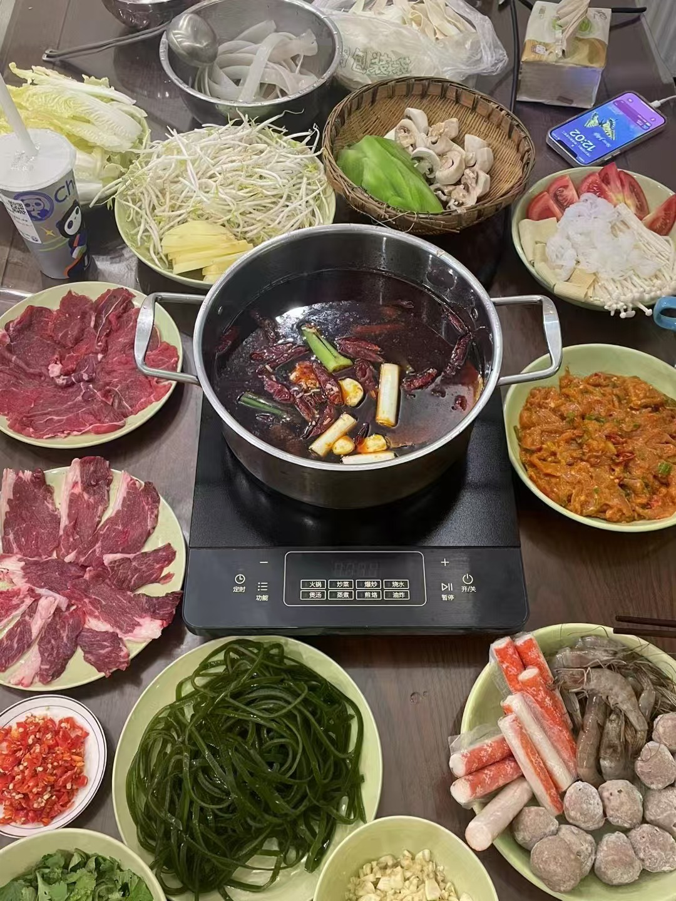
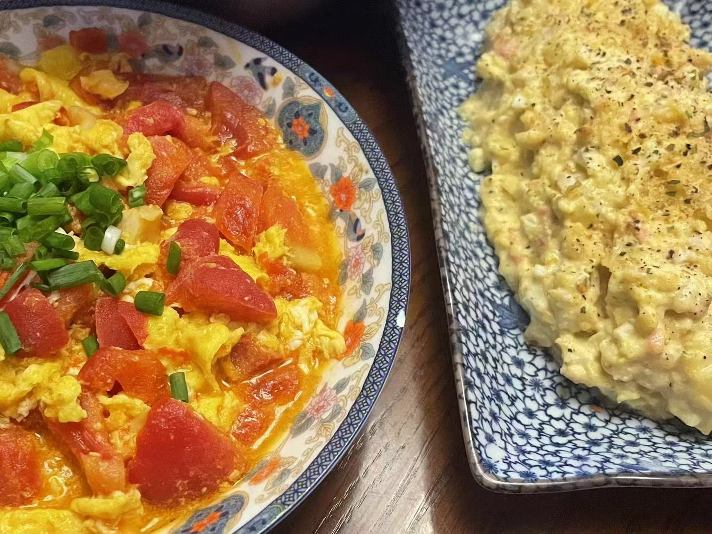
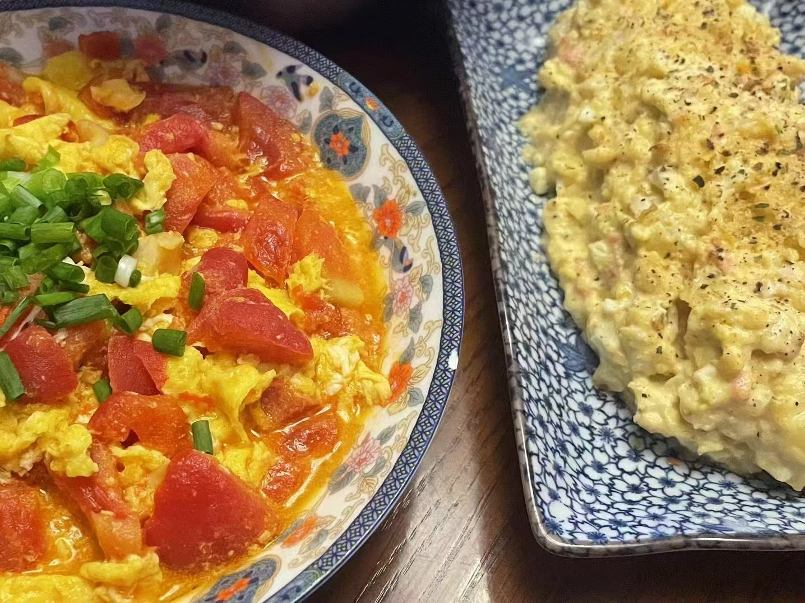
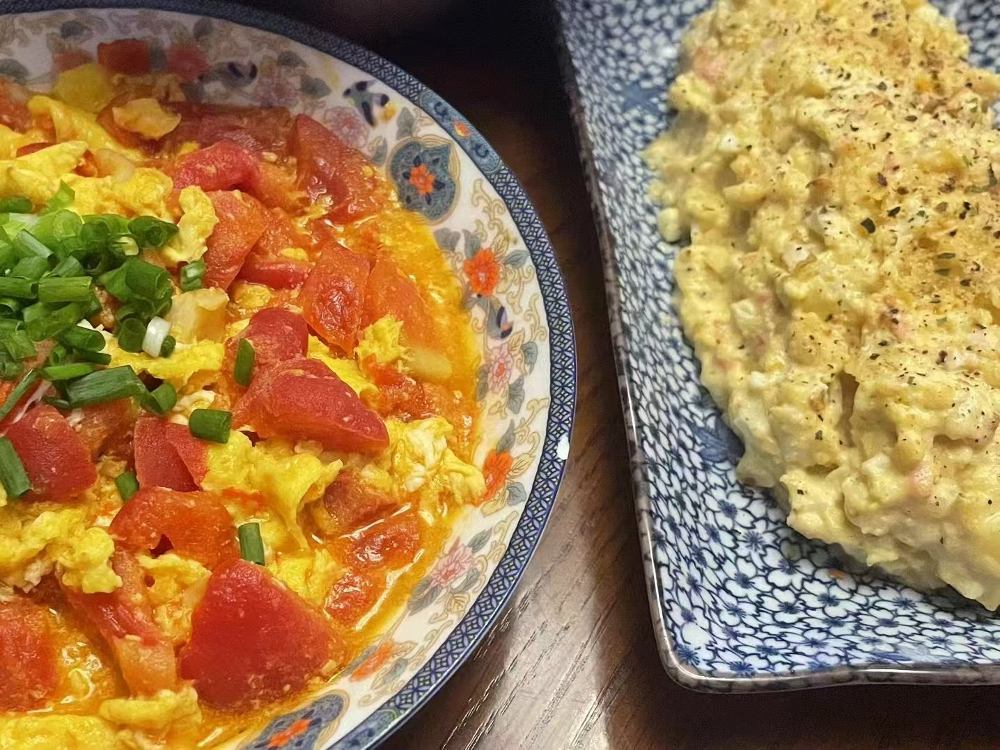

Kinnのホームページにようこそ！
👋初めまして

·Cyoukinn です
２００１年に中国四川省で生まれ、錦城学院に進学して日本語を専攻し、２０２４年に文学学士号を取得した後、嶺南大学で研究を続けています。
·修士、生涯学習者
融合科学技術の修士プロジェクトにおける金融商業管理を研究しています。
·超料理マニア
一度きりの人生をめいっぱい楽しむために、料理を通して、生活も自分も人も愛せるようになります。
·人生の体験者
人間は初心を忘れがちなものです。だからこそ、何かを始めた時の気持ちを忘れず、常に勇気を持って最善を尽くすことが大切です。
👩🏻🍳「自信作」
自作料理の写真集


 

